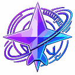

◉
Мониторинг ПК
Загрузка CPU, GPU, оперативной памяти, сети и накопителей в реальном времени.

NOVA ● Версия 1.06.1NOVA объединяет мониторинг системы, игровую библиотеку, оптимизацию, автоматизацию и Dynamic Island в одном удобном приложении.
Основные инструменты собраны в едином интерфейсе, чтобы не переключаться между десятками окон.
Загрузка CPU, GPU, оперативной памяти, сети и накопителей в реальном времени.
Собирай игры в одном месте, добавляй ярлыки вручную и запускай их из NOVA.
Счётчик FPS, среднего значения и 1% Low на основе PresentMon. Первое включение загружает компонент с проверкой файла.
Компактный островок с показателями ПК, музыкой и системными уведомлениями.
Настройки производительности, игровые профили и инструменты управления Windows.
Выбирай приложения для запуска вместе с Windows и настраивай поведение NOVA.
Обновлённый логотип с прозрачным фоном во всём приложении и новые инструменты для игр и системы.
CPU, GPU, RAM и сеть поверх оконных и безрамочных игр. Окно можно перетаскивать и настраивать прозрачность.
Профили запуска игр и настройки Game Boost в единой библиотеке NOVA.
Свободное место на накопителях и поиск самых больших файлов. Анализатор только читает файлы и ничего не удаляет.
Каждый раздел отвечает за свою задачу и использует общий стиль интерфейса NOVA.
Независимый desktop-проект для управления и настройки Windows.